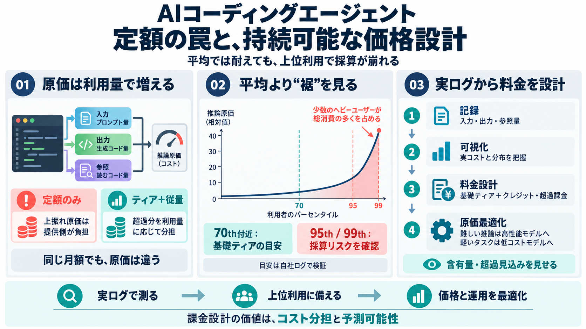

コーディングAIの料金と利用制限【個人・チーム別】 - 自習室管理人ブログ
playpark.co.jp（2026年10月6日時点）によると、Pro+は月$60、Ultraは月$200と、上位プランはかなり高額です。公式ページのFAQでは「日常的にエージェントを使うユーザーにはPro+、エージェントのパワーユーザー…

AIコーディングエージェントの原価は「ユーザー行動」で膨らむため、平常時は見えても上振れで採算が崩れやすい。
AIエージェントは推論（inference）で計算コストが発生し、入力トークン・出力トークン・参照コード量（コンテキスト長）が増えるほど費用も増える。
利用分布は“釣鐘型”よりパワーロー（power-law）になりやすく、少数のヘビーユーザーが総トークン消費の大半を持っていく。
採算を守るには平均ではなく、原価が跳ねる領域（95th/99thパーセンタイル）を基準に設計すべきだという考え方。
定額SaaSの“限界費用が小さい”前提とは逆で、AI推論は利用量に連動する。
GPT-4クラスの推論は料金体系にもよるが「数ドル/100万トークン」級で変動費になり得る。コード読解＋複数ファイル提案だと、1セッションで数万〜十数万トークンが起き得る。
定額は“使った分”が原価になるため、ヘビーユーザーが増えるほど利益率が蒸発する。クレジット/従量は“コストの分担ルール”になる。
単なる値上げではなく、理解しやすい規則（どこまで含むか）を先に作る。
まず「提供単位あたりの実コスト」を把握し、使用量カーブ（コストカーブ）を作ってからティアと超過課金を設計する。
想像でパーセンタイルを置くと撤退（見直し）に繋がり得るため、ログ収集と短期の観測（クローズドベータ等）で分布を確かめ、価格へ反映する。
クレジット/従量・ティア制は「価格を上げる」より「コストを誰が負担するか」を制度化する仕組みとして捉える。
予告・可視化（アローワンス、超過見込み）があるほど不満が減る。
高性能モデルを常時使わず、用途別にモデルを切り替える（model routing）ことで、体験を落としにくく原価を下げられる可能性がある。
Cursor/ Replit/ Anthropicのような例は、定額がヘビーユーザーの負荷で破綻し得ること、そしてクレジット/従量へ移行する合理性を示す。
ただし、確実な設計手順には自社ログが必要で「そのまま適用」できる保証はない。
定額は“平均”では耐えても“裾”で壊れる。実ログでコストカーブを作り、70th基礎ティア＋クレジット/オーバージー、さらにルーティングで総合最適化する。
playpark.co.jp（2026年10月6日時点）によると、Pro+は月$60、Ultraは月$200と、上位プランはかなり高額です。公式ページのFAQでは「日常的にエージェントを使うユーザーにはPro+、エージェントのパワーユーザー…
| 製品 | 個人・小規模 | 法人・組織 | 主な課金要素 | --- --- | | Claude Code(Anthropic Enterprise経由) | Pro/Maxプラン | Team $20〜/シート・月+従量、Ent…
### API / 従量課金比較（2026 年 5 月時点） Claude Opus 4.8: 入力 $5.00 / 出力 $25.00 per MTok（Opus 4.7 と同水準） Claude Sonnet 4.6: 入力 $3…
確認できた要点は3つ。 適用時期: 新規顧客は即時、既存顧客は2026年7月1日以降の請求サイクルから。この記事を書いている時点で、既存Teamsユーザーへの適用がちょうど始まっている Premiumシートの新設: 月120ドル/シー…
在模型層激烈交火的同時，以 Cursor 為代表的應用層玩家證明了「深度嵌入工作流」才是變現的最短路徑。儘管 Cursor 的底層邏輯高度依賴 Claude 的模型能力，但它透過垂直化的工程封裝，成功實現了從「對話工具」到「生產環境」的質變…